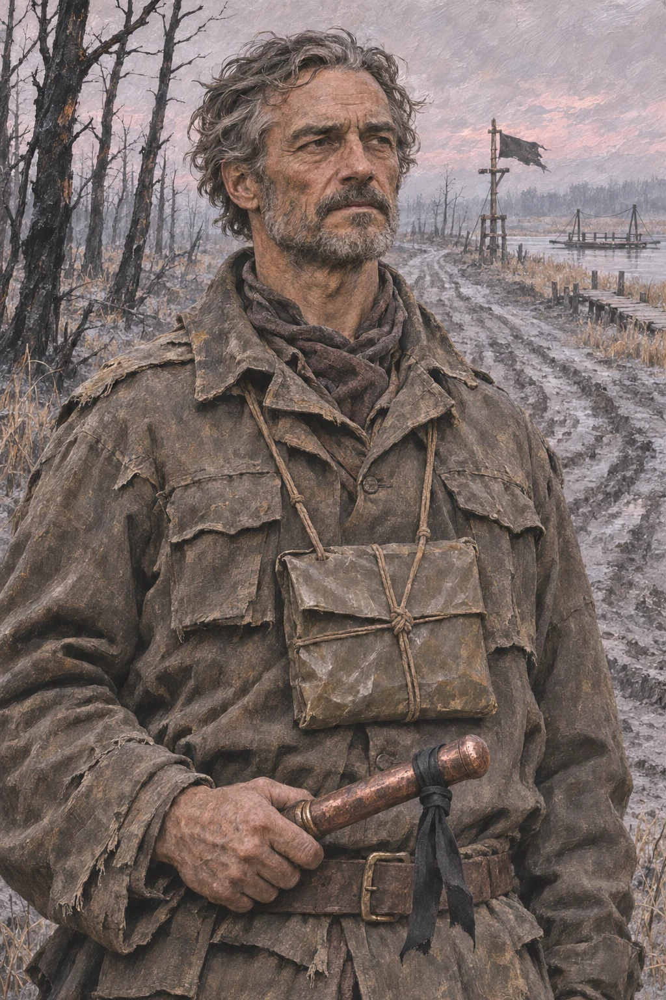
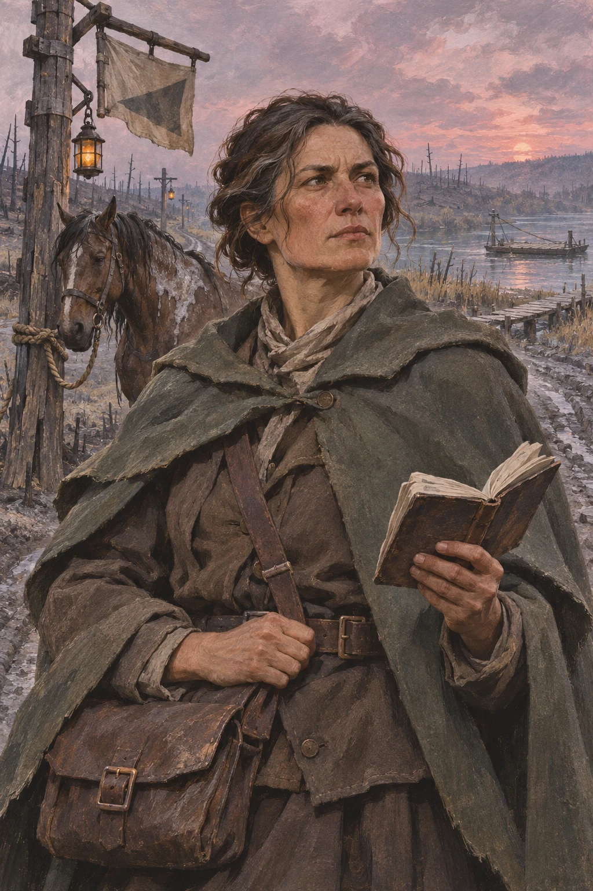

Пройти Двор демобилизованных и решить, закроет ли Олет дорогу колонне
Олет Морин

Ефим Сажин

Фёкла Стремя
Утро после переправы пахнет мокрым пеплом и речной тиной. Дорога от Верёвочной идёт по старому конному настилу, который полк клал для обозов: доски вытерты подковами до блеска, между ними хлюпает серая жижа. Над полем кружат грачи и садятся на кочки, не боясь людей. Впереди — Двор демобилизованных, бывший конный лагерь полка: длинные мастерские под тёсом, дым кузни, навесы с колёсами и упряжью, ворота с пустой перекладиной, где когда-то висело знамя. Ветер доносит оттуда стук молотка по железу и запах дёгтя. На мачте Двора флага нет. Возчики зовут это место коротко — «Двор» — и говорят, что там починят любую упряжь, а приказов не примут ничьих. Ефим идёт рядом и шёпотом считает доски под ногами, как строки ведомости; на одной он сбивается, останавливается и начинает счёт заново.
Подготовка и роли
Шаг: базовый ход колонны — одна мачта. Поправки вечера: «Ворота Двора» −1 — Олет отказывает Руме и закрывает северную дорогу; «Подписанный договор» +1 — отряд обошёл Двор по восточной тропе или не заговорил с Олетом о договоре; Олет отложил подпись — 0. Флаг не обгоняет отряд. Три столбца расчёта: ворота закрыты, флаг с 2 / ворота закрыты, с 3 / договор подписан, с 3. В начале отряд на 5, Р = 3 / 2 / 2; в конце флаг 2 / 3 / 5, отряд на 6 (Двор), Р = 4 / 3 / 1. Подпись отложена — флаг на одну мачту дальше утреннего. Если в вечер 1 Ефима держал дозорный, каждое Р на 1 меньше, но не ниже 0; при Р 0 Рума или её офицер приходит к огню отряда, отдых только короткий. Олет знает своё: отметку конного лагеря, троих, договор Румы, северную дорогу; о костре и письмах не знает, об отметке говорит, только увидев лист. Ефим отвечает правду на прямой вопрос; «мы в листе?» — каждому спросившему отдельно: «Ты — да» или «Тебя — нет, ты не дал»; общего «да» нет. Остальное: «Скажу всё. Не здесь». Боя в этот вечер нет.
Анфиса Рой: труба поста у мачты Верёвочной и ночью с мачты Двора — она первой называет, где стоит чёрный флаг колонны.
Роксана Тур: мостовики были её стороной; ей решать, спросить ли Олета о троих, которых он вывез, и что ответить на «двадцать четыре оставил».
Елисей Дымов: письмо Нелле Арк через Фёклу и мачтовые знаки Двора в зеркальце — подняли ночью лоскут охраны или нет.
Места 6–8: Леон Ключ идёт впереди до разобранного настила и узнаёт у людей Двора, кто проходил; Ада Полынь свидетельствует у верстака слово Олета о воротах; Осип Лён стоит ночную стражу у мачты Двора.
Сцена 1 · 50 минут
Люди Олета на дороге
Через час счёт обрывается сам: впереди настил разобран. Пятеро в кожаных фартуках снимают с лаг старые доски, почерневшие от копыт, кладут на их место светлые, ещё в смоляных потёках, и короткими вениками выметают пепел из щелей. Стук молотков отдаётся над полем, сбоку растёт штабель снятых досок высотой в человеческий рост. Люди Двора чинят настилы окрестных дорог сами, без приказа и без подряда, и проезжие привыкли пробираться мимо их работы по краю. Сыро, с поля тянет холодом, у работников от дыхания идёт пар. Старший, сутулый, с гвоздями в зубах, не разгибая спины, машет молотком в сторону обочины.
Чтение мачт у мачты Верёвочной, на рассвете. Анфиса поднимает трубу; покажите «Ф» на «Мачты Пепельной Межи» и назовите разрыв вслух: флаг на мачте 2 или 3, отряд на 5 — Р 3 («дальний флаг»: в трубу у горизонта; с Р 4 — только по мачтовой книге) или Р 2 («флаг в трубу», чёрный лоскут на Сухом мосту). Сегодня у охраны шаг — одна мачта. Через час дорога упирается в разобранный настил: пятеро людей Двора в фартуках меняют доски и сметают пепел из щелей. Старший, не разгибаясь: «Доски наши, дорога общая. Проходите по краю». Потом он видит Ефима и выпрямляется: «Это ж интендант. Сажин. Фураж нам по весу выдавал». Кто-то сплёвывает в пепел. Ефим не отводит глаз: «Да. Сажин. Я выдавал фураж конному лагерю. По ведомости». Тут же с запада рысью нагоняет вестовой охраны с сумкой — к Олету, от майора; Ефима можно спрятать за штабель досок. Увидит его вестовой — Олет узнает раньше отряда. За настилом развилка: северная дорога через ворота Двора к сержанту Морину или восточная тропа по хуторам в обход. Ефим тихо: «Через ворота. Морин меня знает. Это не значит, что пустит». Обход быстрее, но тогда с Олетом о договоре никто не заговорит.
Выборы — и что будет дальше
Идти северной дорогой через ворота Двора — к Олету и его договору.
Идут северной дорогой, к воротам Двора. Ефим не сворачивает: «Через ворота. Морин меня знает. Это не значит, что пустит». Люди Олета в фартуках расступаются молча, и кто-то за спиной сплёвывает в пепел. Впереди пустая перекладина над воротами и мастерская, откуда пахнет дёгтем. Разговор о договоре будет, и от него зависит, чьей станет короткая дорога колонны.
Обойти Двор восточной тропой по хуторам: без разговора, но колонна ночью +1.
Двор обходят восточной тропой, по хуторам: быстрее, тише, без чужих взглядов. Но с Олетом о договоре никто не заговорит, и ночью он подпишет бумагу Румы: на мачте Двора поднимут чёрный лоскут охраны, а колонна пройдёт лишнюю мачту. Ефим идёт молча и дважды оглядывается на ворота Двора: «Он бы не подписал. Если бы спросили».
Взяться за доски вместе с людьми Двора и заговорить с ними о Ефиме.
Кто-то берётся за доски вместе с людьми Двора: снять гнилую, подать новую, смести пепел из щелей. Работа сближает быстрее слов. Старший, не разгибаясь, говорит: «Сажин фураж нам по весу выдавал. Честно выдавал, надо сказать». Другой хмыкает: «А кому ещё он выдавал по весу — это спроси у Чаши». Разговор тяжёлый, но на отряд здесь уже не смотрят как на охрану.
Спросить Ефима при людях, откуда они его знают.
Ефима спрашивают при людях Двора, откуда они его знают. Он не отводит глаз: «Да. Сажин. Я выдавал фураж конному лагерю. По ведомости». Кто-то в фартуке добавляет громко: «И в Чашу выдавал. Тоже по ведомости». Ефим не спорит: «И в Чашу». Люди Двора замолкают. Теперь каждый здесь знает, кого ведёт отряд, и решать им придётся вместе с Олетом.
Спрятать Ефима от вестового охраны за штабелем досок — или дать ему проехать на виду.
Вестового охраны с сумкой к Олету встречают по-разному. Если Ефима прячут за штабелем досок, вестовой проезжает мимо, не придержав коня, и Олет узнает об интенданте от отряда, а не от майора. Если Ефим остаётся на виду, вестовой придерживает коня, долго смотрит и гонит дальше: «Майору доложу. Слово в слово». Тогда Олет встретит отряд, уже зная всё.
Проверка и путь без броска
Убеждение Сл 12 — пройти мимо людей Двора без ссоры: старший сам ведёт отряд к воротам и говорит Олету «эти — с нами». Без броска: люди Двора узнают демобилизованных «Сухого моста» по трубе Анфисы с выцарапанным названием поста и пропускают молча, Ефима обходят стороной. Вестовой: Ефим за штабелем — не видит, без броска; иначе Обман Сл 12, или он скажет Олету, и сцена 2 начнётся с «Сажина я не звал». Обход восточной тропой — «Подписанный договор»: ведущий вслух записывает колонне +1 на эту ночь.
Если не получилось
Ссора на настиле — люди Двора уходят вперёд и предупреждают Олета. В сцене 2 ворота приоткрыты наполовину, Олет ждёт у верстака и встречает отряд словами «Сажина я не звал»; разговор о договоре всё равно возможен.
Сцена 2 · 50 минут
Двор без знамени
Над воротами Двора голая перекладина, а на столбе рядом темнеет ровный квадрат дырок от гвоздей: знамя сняли, гвозди выдернули клещами, а следы остались. За воротами звенит кузня, у коновязи храпит лошадь, которой меняют подкову, из шорной тянет кожей и дёгтем. В войну здесь держали ремонтных коней полка, и денники до сих пор подписаны номерами, только теперь в них стоят верстаки. В дальней мастерской человек в кожаном фартуке, со стёртым полковым значком на верёвке, строгает спицу для колеса; стружка падает ему на сапоги. На краю верстака белеет лист с печатью, придавленный подковой. Человек не оборачивается, только рубанок у него в руках на миг замирает.
Ворота Двора: над ними пустая перекладина, на столбе — дырки от гвоздей снятого знамени. В мастерской пахнет дёгтем; Олет Морин строгает спицу и не оборачивается. На верстаке, придавленный подковой, лежит договор охраны дорог: кони и плата за службу, подпись Румы Седых — и внизу свежая строка другими чернилами: «Ефима не принимать». Олет кивает на бумагу: «Майор с осени предлагает. Кони, плата. Я пока не подписал». Если спросить почему, он вытирает руки о фартук: «Я троих из Чаши вывез. Не затем, чтобы теперь возить для майора». Северная дорога Двора — короткий путь колонны, и Олет говорит это сам: «Ворота закрыть могу. Открыть потом — не знаю». Ефим стоит у порога, на сапогах серый пепел настила. Если подвести его к верстаку, он говорит один раз, ровно, как пункт ведомости: «Ты вывел троих. Я знал и молчал». Олет откладывает спицу: «Значит, знал». Решение называют вслух: ворота закрыты — колонне ночью −1; договор подписан или о нём не говорили — +1; подпись отложена — 0.
Выборы — и что будет дальше
Спросить Олета, почему он не подписал договор Румы.
Олета спрашивают, почему он не подписал договор. Он вытирает руки о фартук и не оборачивается: «Я троих из Чаши вывез. Не затем, чтобы теперь возить для майора». Потом откладывает спицу: «Ворота закрыть могу. Открыть потом — не знаю». Если отряд просит, он закладывает северные ворота брусом, и колонна пойдёт кругом, по хуторам, теряя мачту.
Подвести Ефима к верстаку и дать ему сказать.
Ефима подводят к верстаку. Он смотрит на договор со свежей строкой «Ефима не принимать» и говорит один раз, ровно, как пункт ведомости: «Ты вывел троих. Я знал и молчал». Олет откладывает спицу: «Значит, знал». Долгая тишина. Потом Олет складывает договор вчетверо и кладёт под подкову, лицом вниз. Подписывать его этой ночью он не станет.
Говорить о договоре без Ефима: что двор теряет, если станет конюшней охраны.
О договоре говорят без Ефима: что Двор получит — коней и плату — и что потеряет: свой труд, свои ворота, своё слово. Олет слушает, строгая спицу, и отвечает скупо: «Конюшня охраны — это навсегда. Сегодня кони, завтра люди». Он не подписывает, но и ворот не закрывает: подпись отложена, и колонна ночью пройдёт столько, сколько прошла бы и так.
Уйти со Двора, не трогая договора (колонна ночью +1).
Со Двора уходят, не трогая договора. Олет провожает отряд взглядом через плечо и снова склоняется над спицей. Ночью он подписывает бумагу Румы, и на мачте Двора поднимают чёрный лоскут охраны: двор служит колонне. Северная дорога открыта, колонна пройдёт лишнюю мачту. Ефим, уходя, смотрит на пустую перекладину: «Ещё одна подпись. Я их считаю».
Проверка и путь без броска
Убеждение Сл 13 — Олет рвёт договор, закрывает северные ворота и ставит у них двоих своих: «Ворота Двора», колонне этой ночью −1. Без броска: Ефим у верстака говорит «Ты вывел троих. Я знал и молчал»; Олет: «Значит, знал», — и закрывает ворота сам, тот же −1. Если о договоре не заговорили или ушли — «Подписанный договор», +1.
Если не получилось
Бросок не удался, а Ефима к верстаку не подвели — Олет откладывает подпись: «Подумаю. Майор подождёт». Ворота открыты, договор не подписан: поправка 0, колонна идёт обычным шагом.
Сцена 3 · 50 минут
Трое из Чаши
У мачты Двора жгут обрезки досок: сухое дерево горит жарко и быстро, и искры столбом уходят в темноту. Люди в фартуках сидят вокруг на чурбаках, кто чинит ремень, кто просто греет руки. У ворот бывшего конного лагеря огонь на ночь не гасят: его оставляют для тех, кто придёт по дороге в темноте. Старший мастерских садится к огню последним, кладёт на колено потрёпанную рабочую книжку в пятнах дёгтя и долго её не открывает. Ефим устроился спиной к огню. Со стороны дороги приближается частый топот, к коновязи выходит конь, тёмный от пота, и Фёкла Стремя спрыгивает на землю, на ходу раскрывая свою книжку.
Привал у мачты Двора. Люди Олета жгут обрезки досок, искры уходят в темноту. Олет садится к огню с рабочей книжкой: между заказами на ободья и спицы — три имени карандашом (улика «Трое из Чаши»). «Возил фураж в Чашу. Ночью вывез на возу троих больных. Остальных оставил». Если отряд показывает ему проходной лист, он находит строку конного лагеря и долго смотрит: «Моя рука. „Пропущено, двадцать семь“». Фёкла Стремя ставит коня у коновязи и раскрывает книжку с часами прибытия: «До пристани — день верхом. Чужих слов не вожу. Ваши — довезу». Ефим сидит спиной к огню и трёт жезл рукавом, пока медь не заблестит. Ночь, флаг колонны: шаг — одна мачта; ворота закрыты — минус одна, итог 0, флаг остаётся на мачте 2 или 3, разрыв 4 или 3; подпись отложена — ход 1, флаг сдвигается на одну мачту; договор подписан — плюс одна, флаг встаёт на мачте 5 у Верёвочной, разрыв 1: огня не разводить, Ефим не спит. Поставьте «Ф» на «Мачты Пепельной Межи» и назовите каждое слагаемое.
Выборы — и что будет дальше
Отдать Фёкле письмо Нелле Арк на пристань (если ещё не писали).
Фёкле отдают письмо Нелле Арк. Она проверяет печать, записывает адрес и час прибытия в книжку: «До пристани — день верхом. Чужих слов не вожу. Ваши — довезу». На рассвете она уезжает к пристани. Через несколько дней придёт ответ: вышка будет смотреть на Долгий настил, и ящик будет считаться донесённым раньше, чем без этого письма.
Спросить Олета о воротах Чаши и о том, кто там стоял.
Олета спрашивают о воротах Чаши. Он долго смотрит в огонь: «Там стоял караул старшины. Утром Кондрат считал людей вслух у ворот — я слышал через забор, когда сгружал фураж». Больше он ничего не прибавляет. Ефим, сидящий спиной к огню, перестаёт тереть жезл рукавом, потом начинает снова, сильнее. Олет смотрит на него и отворачивается.
Показать Олету проходной лист, если пакет вскрыт.
Олету показывают проходной лист. Он находит строку конного лагеря и долго смотрит: «Моя рука. „Пропущено, двадцать семь“». Потом кладёт рядом рабочую книжку с тремя именами. Две бумаги лежат бок о бок: двадцать семь пропущенных и трое вывезенных. Олет говорит тихо: «Значит, знал. И молчал». И, помолчав, кивает на Ефима: «Как и он».
Расставить стражи и решить, кто сидит рядом с Ефимом.
Стражи распределяют, и кто-то садится рядом с Ефимом у огня. Интендант трёт жезл рукавом, пока медь не заблестит, и не говорит ни слова. Люди Олета жгут обрезки досок, искры уходят в темноту. Около полуночи Ефим вдруг спрашивает соседа, не глядя: «Ты считал когда-нибудь людей? Не мешки — людей». И не ждёт ответа.
Проверка и путь без броска
Проницательность Сл 12 — видно, что Олет стыдится не троих, а двадцати четырёх, которых оставил. Без броска: он говорит это сам, глядя в огонь: «Троих я вывел. Двадцать четыре оставил. Считай как хочешь». Улика «Трое из Чаши» открыта в любом случае. О воротах Чаши: «Я был там с возом. Кто стоял в карауле — спрашивай тех, кто стоял». Письмо Нелле Фёкла берёт без броска.
Если не получилось
Олет уходит спать молча — его люди у огня рассказывают сами: «Сержант троих вывез. Ночью, на возу с фуражом». Улика «Трое из Чаши» открыта, книжку Олет утром показывает, если попросить.
Трое из Чаши
Рабочая книжка Олета Морина на верстаке, засаленная, с загнутыми углами и отпечатком подковы на обложке: заказы на подковы и упряжь, записанные дёгтем, и между двумя заказами три имени, вписанные ровнее остальных, без даты.
Что можно установить
Три года назад сержант конного лагеря Олет Морин, возивший фураж в Сухую Чашу, ночью вывел оттуда троих больных мостовиков — вопреки приказу «работ не прекращать». Остальных он оставил. Его отметка «конный лагерь — пропущено» стоит на листе колонны № 14; увидев лист, он узнаёт свою руку.
Получение
Спросить Олета, почему он до сих пор не подписал договор с охраной дорог: он отвечает про троих и показывает книжку. Проверка не нужна.
Запасной путь
Если с Олетом об этом не заговорили, его люди у огня во дворе рассказывают сами, вполголоса: «Сержант троих вывез. Из Чаши. На фуражной телеге, под мешками».
Изменения после решений
Если Олет закрыл северные ворота («Ворота Двора», −1). → Утром люди Олета стоят на северной дороге без флага, поперёк неё — доски настила. Колонна идёт кругом по хуторам; перекладина над воротами остаётся пустой.
Если Отряд обошёл Двор или не заговорил с Олетом о договоре («Подписанный договор», +1). → Олет подписывает договор Румы. Ночью на мачте Двора поднимают чёрный лоскут охраны: двор служит колонне.
Если Олет отложил подпись. → Ворота открыты, лоскута на мачте нет; поправка 0, колонна идёт шагом.
Если Отряд отдал Фёкле письмо Нелле Арк (если не писал в вечер 1). → В вечер 6 Фёкла привозит ответ: «Вышка будет смотреть на настил». В финале ящик донесён уже на 18-м столбце.
Завершение вечера
Ночь над Двором. Люди Олета гасят горн, последние искры от обрезков досок уходят в темноту, и пустая перекладина над воротами чернеет на фоне неба. Ворота заложены брусом — или распахнуты, и тогда к утру на мачте Двора может затрепетать чёрный лоскут. С досок настила сыплется пепел. А дальше на восток, у ответвления на старый карьер, уже слышен стук топоров: там под навесом тешут мостки, и Ефим, глядя в ту сторону, перестаёт считать доски. Если кто-то видел рабочую книжку Олета, пусть его игрок скажет, запомнил ли герой три имени и кому собирается их назвать.